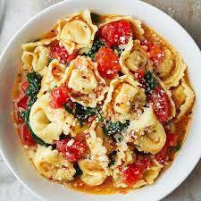

Antero's Quick Tortelloni

This is a fast one. Just some ready made tortelloni, oil, onions, garlic and spices.
Simple and extremely tasty!
Ingredients
- Tortelloni of your choosing
- One onion
- Garlic (at least a couple cloves)
- Spices - herb mixtures work great
- Olive oil
Time
About 10-15 minutes
Instructions
- Chop the onions and garlic
- Put water to boil
- Add some salt to water
- While the water is heating, add copious amounts of oil to a pan, turn the heat
- Add the chopped onions, garlic and spcies to the pan.
- Let the good stuff simmer in the oil
- When the water is boiling, add the pasta and drain afterwards
- Put the pasta back to the kettle, pour the oil and other goodies on top of the pasta
- Stir the kettle
- Serve with parmegiano cheese
Tip:
For variety - you can add some bacon, meatballs or other such things to the oil and spices.
Return to top
Back to Odin Recipes